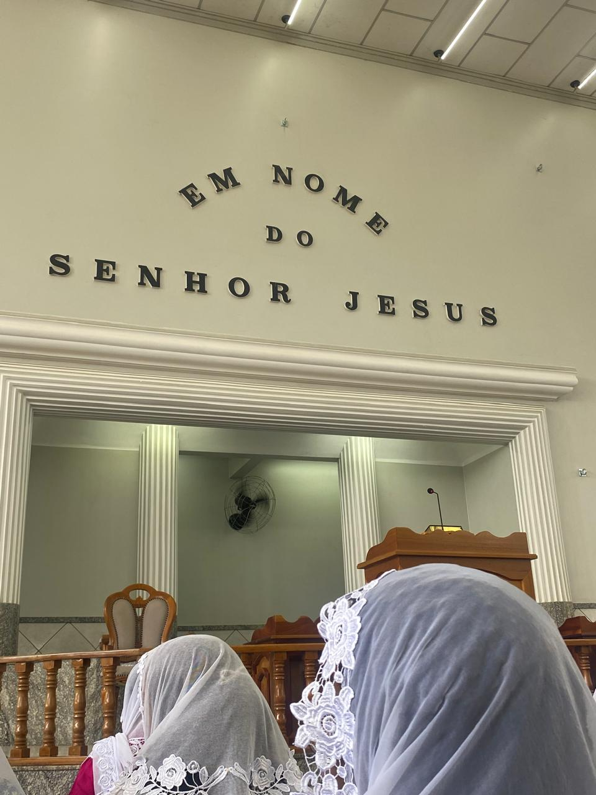
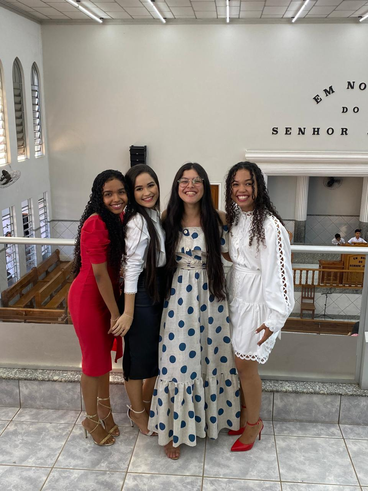
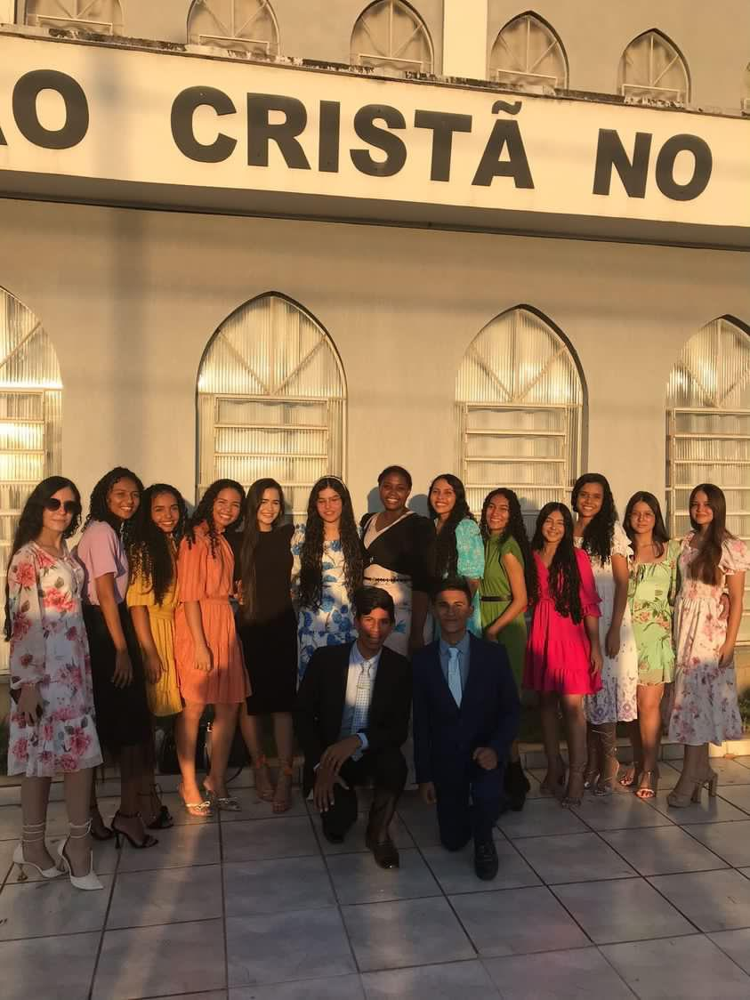
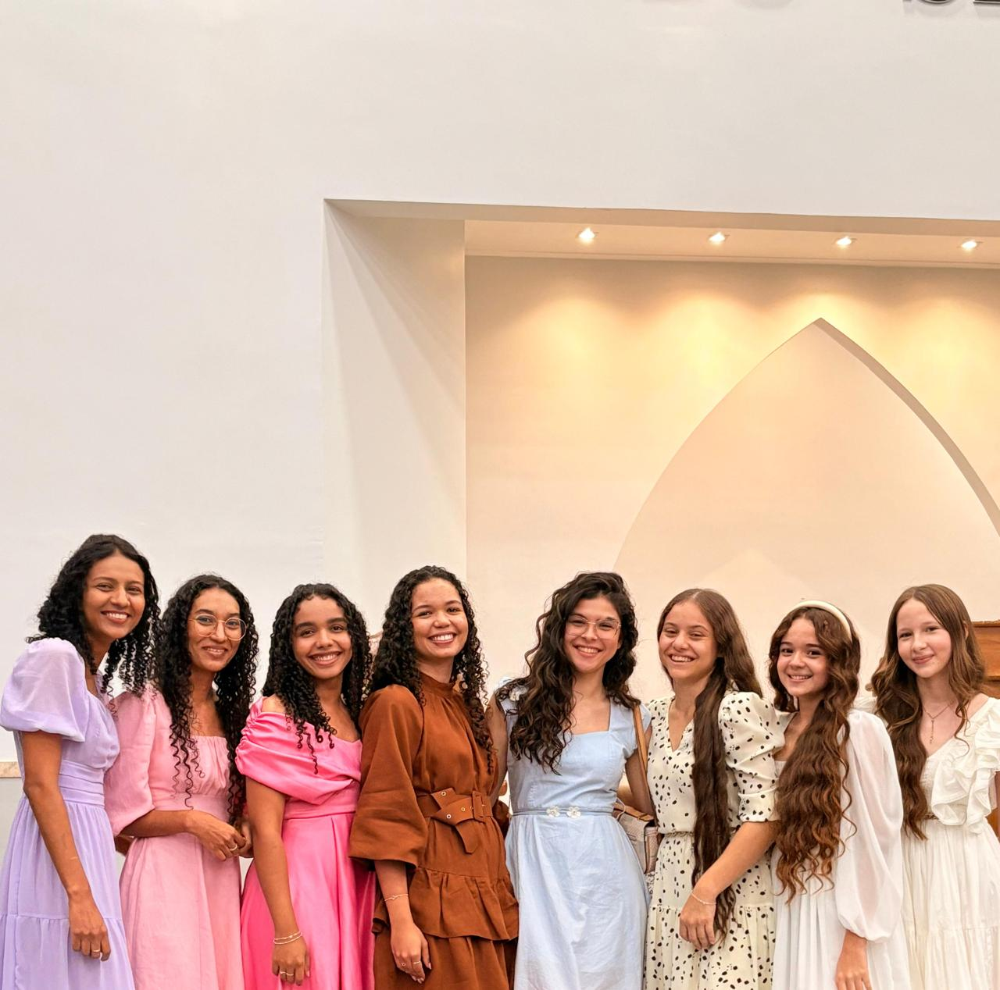
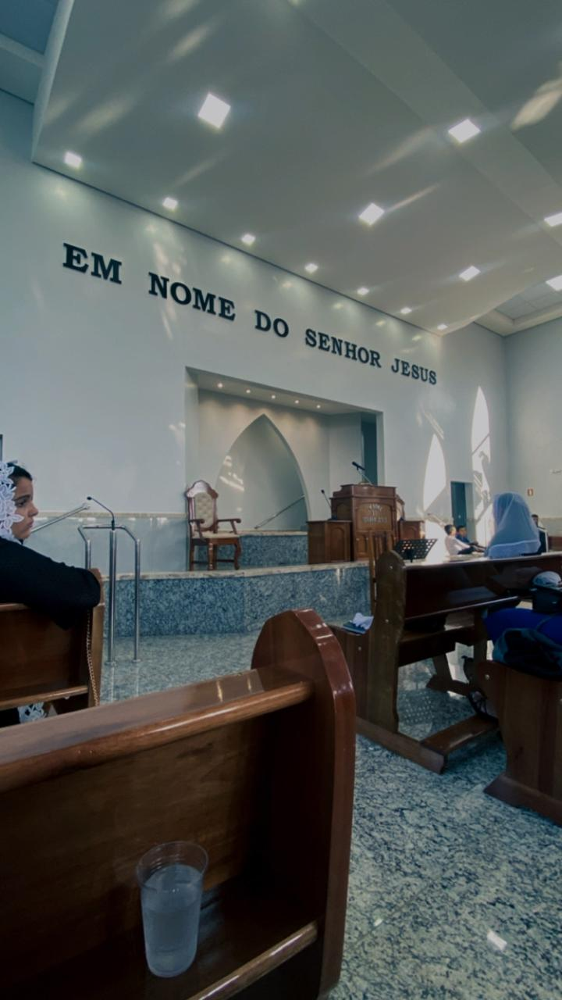

Reunião de Mocidade em Miranorte

Reunião de Mocidade em Gurupi

Jovens na Reunião de MocidadeAna com amigos na igrejaReunião de Mocidade em Itapaci

Momento de comunhãoRecordação especial na igreja

Recordação especial na igrejaVídeo de momentos especiais na igreja